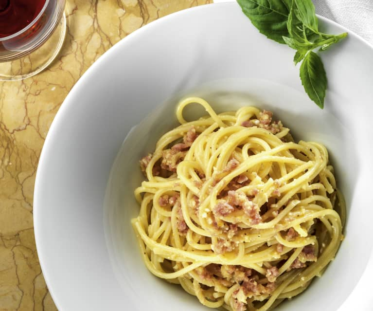

"Carbonara" Spaghetti
Use milk and cream cheese in place of eggs to make an extra-creamy
carbonara.

Ingredients
- 1 (8 ounce) package linguine pasta
- 1 cup frozen peas
- 5 slices bacon
- 1 clove garlic, minced
- 1 cup milk
- ½ (8 ounce) package cream cheese
- ¼ cup grated Parmesan cheese
Steps
-
Bring a large pot of lightly salted water to a boil. Cook linguine at a
boil until tender yet firm to the bite, about 11 minutes, adding peas in
the last minute of cooking. Drain and keep warm in a bowl.
-
Place bacon in a large skillet and cook over medium-high heat, turning
occasionally, until evenly browned, about 10 minutes. Transfer bacon to
paper towels, reserving 1 tablespoon of drippings in the skillet.
-
Add garlic to the skillet; saute for 1 minute. Reduce heat to low and
stir in milk and cream cheese until blended.
-
Crumble bacon and add to the linguine along with sauce and Parmesan
cheese; stir to coat.
Cook's note:
Cook linguine pasta according to individual package instructions.
Back to the homepage